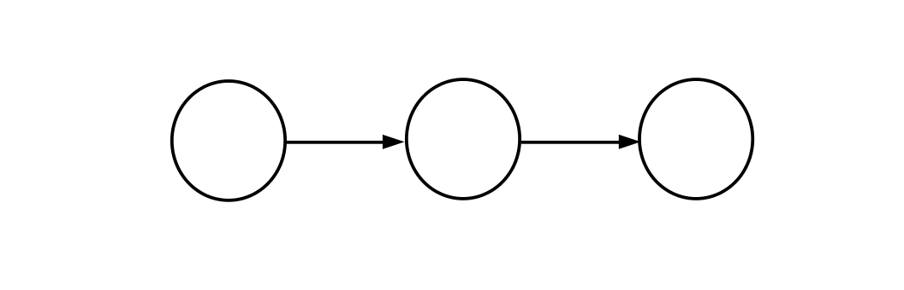
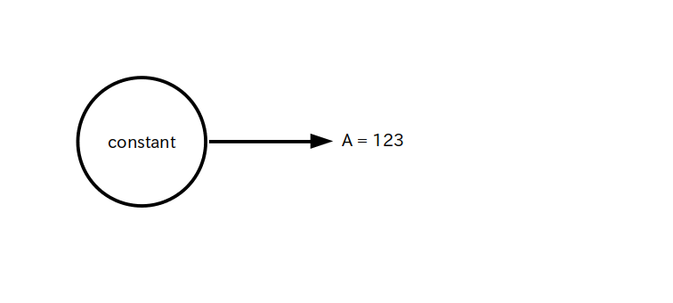

Java や C/C++ の様な命令型プログラミングと異なって、「データフロー・グラフ」と呼ばれるグラフを設計し、そのグラフにデータを流す(フローさせる)ことで演算を行うというスタイルのプログラングのことを「データフロー・プログラミング」と呼びます。
データフロー・グラフは視覚化しやすいのでビジュアルプログラミング形式でプログラムすることも多いです。
さて TensorFlow はデータフロー・プログラミング型のプログラミング言語であり、グラフ内を流れるデータは前ページで説明した「テンソル」です。
以下の図 1 は TensorFlow の「データフロー・グラフ」の基本形です。
TensorFlow では図内の ○ を 「オペレーション」、オペレーション間をつないでいる矢印の事を「エッジ」と呼んでいます。
このエッジの上を矢印の方向に向かってテンソルが流れます。
※ TensorFlow 本家のチュートリアルでは「グラフとは、計算のユニットを表す一連の tf.Operation オブジェクトと、演算間を流れるデータのユニットを表す tf.Tensor オブジェクトを含むデータ構造です」説明しています。
○ ・・・ オペレーション(Operation) : 入力されたテンソルに対して演算処理を行い、演算結果のテンソルを出力する演算ユニット
矢印・・・エッジ : テンソルが矢印の方向に流れる
(注) 一般的なデータフロー・グラフでは「オペレーション」のことを「ノード」と呼んでいます
オペレーションについてもう少し詳しく説明します。
オペレーションは入力側のエッジを通って流れてきたテンソルに何らかの演算処理を行なって、その結果をまたテンソルとして出力側のエッジに流す役割を持つ演算ユニットです。
入出力エッジは図 1 では 1 本だけでしたが、実際には 0 本から複数本まで入出力可能です(図2)。
TensorFlow はデータフロー・グラフの作成と演算を同時に実行します。
この仕組みのことを「Eager Execution(積極的実行)」と呼びます。
ではハローワールド(以下に再掲)を使ってどの様に TensorFlow が実行されるか説明します。
import tensorflow as tf A = tf.constant( 123.0, dtype=tf.float32 ) tf.print( A ) # 表示結果 # 123
まず最初の import 文で TensorFlow モジュールを tf という名前でインポートしています。
次の行で tf.constant という定数を出力するオペレーション(次のページで説明します)を使い、32 bit浮動小数点数型(float32)の定数 123.0 をテンソル A に代入しています。
そして最後の行でテンソル A の中身を表示しています。
なおソース 1 は図 3 の様なデータフロー・グラフで表されます。
